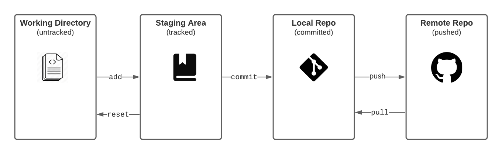
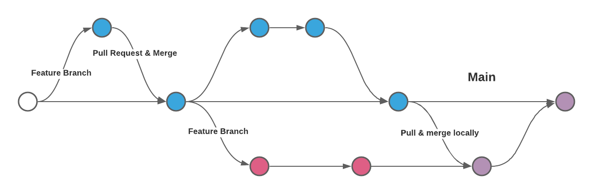
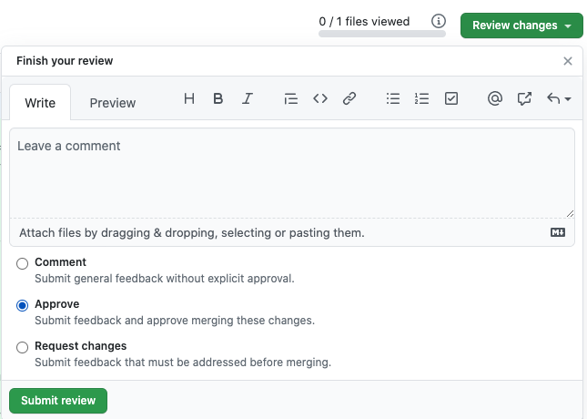
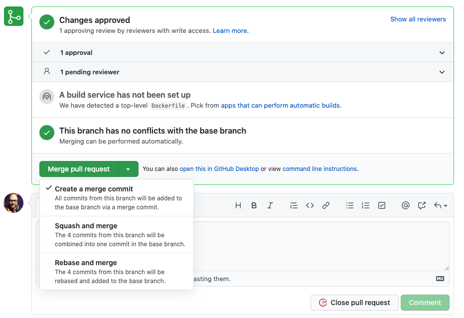
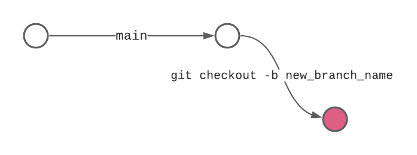
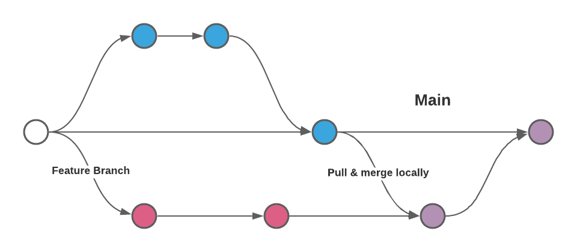

Teaching Commands Just Encourages Cargo Culting
When I first learned to use Git, it supercharged my development and I was quickly sold on its value, but I had no real understanding of how it worked. I just memorized and/or frequently Googled the right commands and hoped I never encountered any issue I couldn’t solve on my own or find a solution for in Oh Shit, Git!?!
Even since spending the time to understand it better, I’ve had a fewer and fewer encounters where a major malfunction like someone pushing production security keys to a public repo has resulted in nuking the repo and starting fresh. Luckily that’s only happened on very nascent projects where that really was the simplest solution.
That being said, I wouldn’t wish that learning curve on anyone with half a brain and any less persistence than me. I’ve been known to call myself the wrecking ball because when all else fails I keep throwing myself at the wall until it crumbles. I’m stubborn to a fault, but I get things done.
How Git Tracks Changes
While searching for better ways to teach about the change tracking concepts in Git, I came across this interactive visualization which I thought was incredibly helpful for wrapping your head around what’s happening when you type in those magical commands.

Working Tree/Directory
This context encapsulates the untracked changes to files in an initialized (git init) repository.
Staging Area
This context encapsulated the tracked changes to files and allows you to review atomic changes as well as control the granularity of commits. Files are added here to be tracked.
Local Repository
This is like a small database in which you can make save points or commits in your file history. It lives in a special hidden folder in the directory (.git/)
Remote Repository
This is a centralized version/copy of the git repository that lives on a different computer or hosted service like Github, Gitlab, Bitbucket, or even a self hosted server. Changes are pushed to the remote repository.
Git Collaboration with Feature Branch Workflow
I generally find the simplest way to collaborate with others in a codebase is the feature branch workflow approach. Each dev works on a separate and limited in scope feature branch, code reviews happen in pull requests, and then code is frequently merged into the main not master branch (see here for a great reason to start using main instead of master).

Git Workflow in 10 Steps
Ok, so I know I said don’t just memorize commands, but these are the 10 commands to commit (see what I did there?) to memory.
1. Clone new repo or pull changes to main branch for existing
$ git clone https://github.com/the-repos-url.gitOR
$ git pull origin main2. Checkout a local feature branch to make changes
$ git checkout -b my_new_branch3. Commit after making your code changes (writing good commits)
$ git add -A
$ git commit -m "Add some new functionality"4. Push changes to a remote feature branch
$ git push origin my_new_branch5. Open a Pull Request (and request reviewers)
6. Code Review: Responding to change requests
$ git add -A
$ git commit -m "Fix issue raised in code review"7. Code Review: Approved

8. Merge (or squash merge) into main branch

9. Checkout main (locally)
$ git checkout main10. Pull changes (back to step 1)
$ git pull origin mainRinse and repeat for the next feature!
Common Git Commands and What They Do
$ git clone # copy remote repos to local
$ git checkout -b branch_name # create and checkout a new branch
$ git add -A # add all changed files to staging
$ git status # view status of the working directory and staging area
$ git diff # view changes made on file(s)
$ git commit -m “Your message goes here” # save changes to local repo
$ git pull origin main # get changes to main branch from remote repo
$ git fetch # get references to all remote branches, so they can be checked out
$ git push origin branch_name # push local changes to remote repo
$ git merge main # merge changes to main branch into another branch
$ git log --oneline # view list of commit messagesA Few More and When to Use Them
$ git stash # temporarily store changes in order to switch contexts
$ git stash pop # restore temporarily stored changes
$ git reset # reset tracked file(s) to untracked (can also be used for dangerous reverts)
$ git revert # safer way to undo changes (fail forward)Creating Branches (when, why, how)

When
As a rule you should use branches liberally. Anytime you need to make a change or set of changes to the code base, you should create a “feature” branch to isolate those changes.
Why
Isolating your changes to a branch prevents conflicts with other collaborators and helps you experiment without fear of making “breaking” changes to the main codebase. Great for experimenting!
How
$ git branch # list all local branches
$ git branch new_branch_name # create a new branch
$ git checkout new_branch_name # switch to that new branch
$ git checkout -b new_branch_name # create and checkout in one step
$ git branch -d new_branch_name # delete a branch safely (error if unmerged)
$ git branch -D new_branch_name # force delete (can delete unmerged)Pull Requests
Pull requests let you tell others about changes you’ve pushed to a branch in a repository on GitHub. Once a pull request is opened, you can discuss and review the potential changes with collaborators and add follow-up commits before your changes are merged into the base branch
Code Review (Approve, Request Changes, Comment) → Merge → Deploy
Pulling Changes from main to a Local Branch AKA Merging Locally

When
A change on main affects your local branch and you need to integrate them into your local changes. This is the same process Github runs when a PR is approved and merged into the main branch.
Why
Resolving merge conflicts locally before creating PR allows for simpler code review and prevents complications in getting your changes integrated into the main branch.
How
First commit or stash any changes you are currently working on. Then checkout main and pull changes from the remote repo. Checkout your feature branch again and run git merge main to begin the merge process. If there are any merge conflicts, resolve them by choosing which segment of code to keep and then make a new commit.